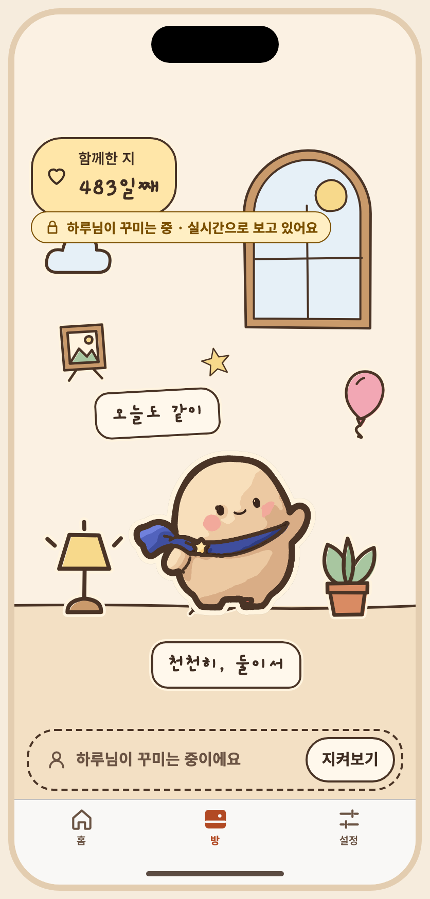
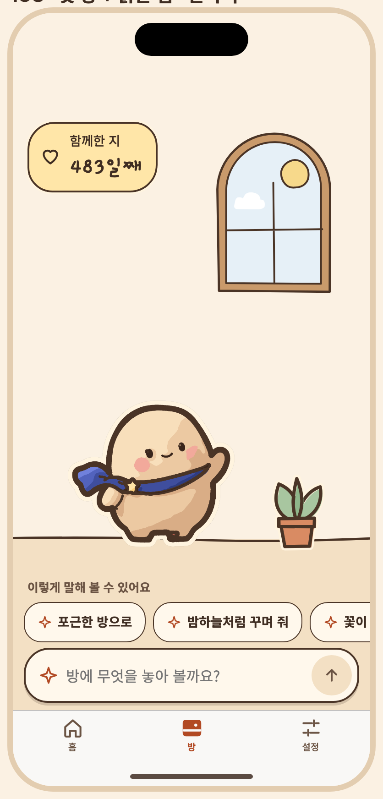

아티팩트 정본의 저장소 미러 · 버전 1794274258-930a · 생성 파일은 수정하지 마세요. 상태 명세와 PNG는 아티팩트에 비해 오래되었을 수 있습니다. 아티팩트


# S24 S24 tab 승인자: 미승인 승인일: 미정 ## 목적, ID, 경로 ID: S24 Route: /(tabs)/room ## 디자인 원본 - [S24-tab-room.dc.html](../../../canvas/project/S24-tab-room.dc.html) ## 이미지 - [S24-partner__ios-day-light-ko.png](../../../exports/S24-partner__ios-day-light-ko.png) - [S07-first__ios-day-light-ko.png](../../../exports/S07-first__ios-day-light-ko.png) - [S09-chat-mine__ios-day-light-ko.png](../../../exports/S09-chat-mine__ios-day-light-ko.png) ## 상태와 상호작용 > **2026-11-10 · 꾸미기 독으로 바뀌었어요.** 아래 설명과 상태 표의 일부는 2026-10 설계(꾸미기 시트 · 적용 확인 화면) 기준으로 남아 있어요. 지금 흐름은 방 아래 작은 독 + 방 위 미리 보기이고, 오너가 2026-11-10에 정한 규칙은 ① 적용 직후 방 위 ‘적용했어요 · 되돌리기’ 한 줄(한 단계 · 다시 적용 없음 · 다음 요청, 방 탭을 떠날 때, 3분 유휴에 끝남) ② 차례 부탁하기 · 넘겨주기 ③ 독의 ‘오늘 n번 남음’이에요. 현재 상태 목록은 캔버스 보드를, 규칙은 [interaction notes](../../../interaction-notes.md) §4–§6 · §9 · §14와 [spec](../../../../specs/001-couple-prompt-todo/spec.md)의 FR-011 · FR-013 · FR-028 · FR-030 · FR-031을 따르세요. 위 이미지는 현재 보드에서 다시 뽑았어요. | 상태 ID | 설명 | 사용하는 키 | |---|---|---| | `S24-first` | 방 · 첫 실행(마스코트만) + 꾸미기 안내 | `coach.room` `coach.ok` `a11y.pose.wave_main` `a11y.mascot` `a11y.pose.walk` `a11y.pose.cheer` `a11y.pose.lookup` `a11y.pose.lie` `a11y.pose.sleep` `date.since` `a11y.dday` `dday.eyebrow` `dday.count` `room.ctl.decorate` `a11y.tabbar` `tab.home` `a11y.tab` `tab.room` `a11y.tab.sel` `tab.settings` | | `S24-empty` | 방 · 비어 있음(새 방 그대로) | `a11y.pose.wave_main` `a11y.mascot` `a11y.pose.walk` `a11y.pose.cheer` `a11y.pose.lookup` `a11y.pose.lie` `a11y.pose.sleep` `date.since` `a11y.dday` `dday.eyebrow` `dday.count` `room.ctl.decorate` `a11y.tabbar` `tab.home` `a11y.tab` `tab.room` `a11y.tab.sel` `tab.settings` | | `S24-normal` | 방 · 보통(꾸민 방) | `a11y.pose.wave_main` `a11y.mascot` `a11y.pose.walk` `a11y.pose.cheer` `a11y.pose.lookup` `a11y.pose.lie` `a11y.pose.sleep` `date.since` `a11y.dday` `dday.eyebrow` `dday.count` `room.ctl.decorate` `a11y.tabbar` `tab.home` `a11y.tab` `tab.room` `a11y.tab.sel` `tab.settings` | | `S24-partner` | 방 · 상대가 꾸미는 중(실시간 읽기 전용 · 꾸미기가 지켜보기로 바뀜) | `sample.partner` `room.partnerLive` `a11y.pose.wave_main` `a11y.mascot` `a11y.pose.walk` `a11y.pose.cheer` `a11y.pose.lookup` `a11y.pose.lie` `a11y.pose.sleep` `date.since` `a11y.dday` `dday.eyebrow` `dday.count` `room.watch` `a11y.tabbar` `tab.home` `a11y.tab` `tab.room` `a11y.tab.sel` `tab.settings` | | `S24-loading` | 방 · 로딩 | `room.loading` `room.ctl.decorate` `a11y.tabbar` `tab.home` `a11y.tab` `tab.room` `a11y.tab.sel` `tab.settings` | | `S24-offline` | 방 · 오프라인 읽기 전용 | `room.offline` `a11y.pose.wave_main` `a11y.mascot` `a11y.pose.walk` `a11y.pose.cheer` `a11y.pose.lookup` `a11y.pose.lie` `a11y.pose.sleep` `date.since` `a11y.dday` `dday.eyebrow` `dday.count` `room.ctl.decorate` `a11y.tabbar` `tab.home` `a11y.tab` `tab.room` `a11y.tab.sel` `tab.settings` | | `S24-error` | 방 · 동기화 실패 / 장면 복구 오류 | `room.syncFail.title` `room.syncFail.body` `common.retry` `a11y.pose.wave_main` `a11y.mascot` `a11y.pose.walk` `a11y.pose.cheer` `a11y.pose.lookup` `a11y.pose.lie` `a11y.pose.sleep` `date.since` `a11y.dday` `dday.eyebrow` `dday.count` `room.ctl.decorate` `a11y.tabbar` `tab.home` `a11y.tab` `tab.room` `a11y.tab.sel` `tab.settings` | | `S24-modal-decorate` | 방 → 꾸미기(모달 시트 · 탭 바를 덮음) | `prompt.msg.me` `prompt.msg.time` `prompt.msg.result` `prompt.placeholder` `a11y.input` `a11y.send` `prompt.left` `prompt.idleHint` `a11y.pose.wave_main` `a11y.mascot` `date.since` `a11y.dday` `dday.eyebrow` `dday.count` `prompt.title` `prompt.mine` `a11y.presence` | ## 이동 및 뒤로 F03: S07 → S08 → S09 → 적용 후 S07; S09 → S10 → 이전 미리보기; 필요 시 S12 동의. 뒤로: 대화/시트 또는 확인을 닫고 이전 단계로. 취소 시 방은 유지. ## 접근성 상태 표에 나열된 `a11y.*` 키를 스크린 리더 이름으로 사용합니다. 공통 접근성 및 200% 글자 규칙은 [interaction notes](../../../interaction-notes.md#10-접근성-상호작용)를 참조하세요. TODO: 해당 상태에 명시되지 않은 역할과 이름을 확인하세요. ## 수락 시나리오 - [ ] S24-AC-01: 방 탭을 선택하면 방 루트를 표시한다. ## 열린 질문 / 추적 TODO: 명세에 없는 disabled/offline 상태의 적용 여부와 정확한 뒤로 대상을 확인하세요. 시나리오와 요구사항·테스트·실행 결과는 [추적표](../../traceability.md)에 연결하세요.
| Key | 한국어 | English · draft G4 | 日本語 · draft G4 |
|---|---|---|---|
| a11y.dday | 함께한 지 {n}일째, 2025년 6월 29일부터 | Day {n} together, since June 29, 2025 | 一緒に過ごして{n}日目、2025年6月29日から |
| a11y.input | 꾸미기 요청 입력칸 | Decorating request field | 飾り付けリクエストの入力欄 |
| a11y.mascot | 아루미, {pose} | Aroomi, {pose} | アルーミ、{pose} |
| a11y.pose.cheer | 신나 있어요 | cheering | はしゃいでいます |
| a11y.pose.lie | 쉬고 있어요 | resting | 休んでいます |
| a11y.pose.lookup | 올려다보고 있어요 | looking up | 見上げています |
| a11y.pose.sleep | 자고 있어요 | sleeping | 眠っています |
| a11y.pose.walk | 걷고 있어요 | walking | 歩いています |
| a11y.pose.wave_main | 인사하고 있어요 | waving | 手を振っています |
| a11y.presence | 꾸미기 상태: {state} | Decorating status: {state} | 飾り付けの状態：{state} |
| a11y.send | 요청 보내기 | Send request | リクエストを送信 |
| a11y.tab | {name} 탭, {total}개 중 {n}번째{sel} | {name} tab, {n} of {total}{sel} | {name}タブ、{total}件中{n}件目{sel} |
| a11y.tab.sel | , 선택됨 | , selected | 、選択中 |
| a11y.tabbar | 탭 막대 | Tab bar | タブバー |
| coach.ok | 알겠어요 | Got it | わかりました |
| common.retry | 다시 시도 | Try again | もう一度試す |
| date.since | 2025년 6월 29일부터 | since June 29, 2025 | 2025年6月29日から |
| dday.count | {n}일째 | Day {n} | {n}日目 |
| dday.eyebrow | 함께한 지 | Together | 一緒に過ごして |
| prompt.mine | 내가 꾸미는 중 | You're decorating | あなたが飾っています |
| prompt.msg.me | 분위기를 조금 포근하게 바꿔 줘. 쿠션이랑 조명을 놓고 싶어. | Make it a bit cozier. I'd like a cushion and a lamp. | もう少し温かい雰囲気にして。クッションとランプを置きたい。 |
| prompt.msg.result | 쿠션 1개, 조명 1개를 놓았어요 | I added 1 cushion and 1 lamp | クッションを1個、ランプを1個置きました |
| prompt.msg.time | 오후 9:14 | 9:14 PM | 21:14 |
| prompt.placeholder | 어떻게 꾸미고 싶나요? | How would you like to decorate? | どんな部屋にしたいですか？ |
| prompt.title | 함께 꾸미기 | Decorate together | いっしょに飾る |
| room.ctl.decorate | 꾸미기 | Decorate | 飾る |
| room.loading | 방을 불러오는 중이에요 | Loading your room | 部屋を読み込んでいます |
| room.offline | 인터넷이 끊겨서 보기만 할 수 있어요 | You're offline, so the room is view-only | オフラインのため、表示のみ可能です |
| room.partnerLive | {name}님이 꾸미는 중 · 실시간으로 보고 있어요 | {name} is decorating · live view | {name}さんが飾り中 · ライブ表示 |
| room.syncFail.body | 마지막으로 확인한 방을 보여 드리고 있어요. | Showing the room as last seen. | 最後に確認した部屋を表示しています。 |
| room.syncFail.title | 동기화하지 못했어요 | Couldn't sync | 同期できませんでした |
| room.watch | 지켜보기 | Watch | 見守る |
| sample.partner | 하루 | Haru | ハル |
| tab.home | 홈 | Home | ホーム |
| tab.room | 방 | Room | 部屋 |
| tab.settings | 설정 | Settings | 設定 |